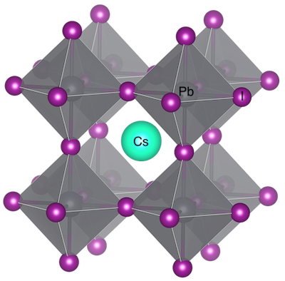

4. Crystal Representations#
4.2. ABX3 perovskite structure#
Let’s start by considering how we can represent a crystal structure in Python. We will make use of the functionality for storing and representing crystal structures in pymatgen.
The Structure module contains the Structure class which can be used to represent the unit cell of a crystal. Remember, this is the simplest repeat unit of a crystal that is defined by three unit cell lengths (a,b,c), three angles (\(\alpha,\beta,\gamma\)), and the fractional coordinates of the atoms that it contains.
Below, we will create a model of a cubic perovskite from its spacegroup, Pm3̅m (No. 221). For a cubic unit cell a = b = c and \(\alpha = \beta = \gamma = 90 ^{\circ}\), so we only need to define the length of a.
We will now generate a structure for CsPbI3 from a spacegroup using the class method Structure.from_spacegroup().

This graphic was created using VESTA.
# Create a structure object for cubic CsPbI3 using pymatgen
from pymatgen.core import Structure, Lattice # Structure modules
CsPbI3 = Structure.from_spacegroup(
'Pm-3m', # Spacegroup for a cubic perovskite
Lattice.cubic(6.41), # Cubic spacing of 6.41 Å
['Pb2+', 'Cs+', 'I-'], # Unique species of the ABX3 compound
[[0.,0.,0.],[0.5,0.5,0.5],[0.,0.,0.5]] # Fractional atomic coordinates of each site
)
# Print the structure details
print(CsPbI3)
Note that it has used the symmetry from the space group information to create a primitive unit cell with 5 atoms. Within pymatgen, we can export crystal structures to a variety of file formats using the to method of the Structure class. Some of these include the Crystallographic Information Format (cif) and POSCAR (the standard file format for the density functional theory code VASP). A complete list of file formats can be found in the docs for the Structure class.
Note, the filename argument of the to method needs to be specified to save the file to disk. Only supplying the fmt argument will result in a string being returned.
# Print the file to screen
print('\nThe CIF format for CsPbI3 is shown below:\n')
print(CsPbI3.to(fmt='cif'))
# Export the structure to a CIF
# CsPbI3.to(filename='CsPbI3.cif')
# Download the CIF from Google Colab
# from google.colab import files
# files.download('CsPbI3.cif')
Code hint
You can export a .cif by uncommenting and running the lines above. These files can be opened in a visualiser of your choice (e.g. VESTA or Crystalmaker).There are many useful functions for analysing these structures. As we are using Python, this analysis can be extended to large databases of thousands to millions of entries. Below we check distances and two methods for assigning coordination numbers (detailed here).
# Distance between the first and second atoms
distance = CsPbI3.get_distance(0, 1)
print(f"Distance between Pb and Cs: {distance:.2f} Å")
# Coordination environment of Pb using Voronoi tessellation
from pymatgen.analysis.local_env import VoronoiNN
vnn = VoronoiNN()
coord_env = vnn.get_nn(CsPbI3, 0)
print(f"\nCoordination number of Pb (VoronoiNN): {len(coord_env)}")
# Coordination environment of Pb using Crystal Near-Neighbor Algorithm
from pymatgen.analysis.local_env import CrystalNN
crystal_nn = CrystalNN()
coord_env_crystal = crystal_nn.get_nn(CsPbI3, 0)
print(f"\nCoordination number of Pb (CrystalNN): {len(coord_env_crystal)}\n")
for site in coord_env_crystal:
print(f"Distance to {site.species_string}: {CsPbI3.get_distance(0, site.index):.2f} Å")
# Assign oxidation states
from pymatgen.analysis.bond_valence import BVAnalyzer
analyzer = BVAnalyzer()
valences = analyzer.get_valences(CsPbI3)
print(f"\nAssigned oxidation states:")
for site, valence in zip(CsPbI3.sites, valences):
print(f"{site.species_string}: {valence:+.1f}")
You can imagine how to hand-build simple feature vectors to describe crystal strutures, but we can do this more systematically using purpose-built representations for machine learning. Let’s try to construct a Sine Coulomb matrix with matminer.
from matminer.featurizers.structure import SineCoulombMatrix
# Sine matrix representation
scm = SineCoulombMatrix(flatten=False)
scm.fit([CsPbI3])
scm_fea = scm.featurize(CsPbI3)
np.set_printoptions(precision=2, suppress=True)
print("\nSine Coulomb matrix features:\n", np.array(scm_fea))
The output is a 5x5 matrix because there are 5 atoms in the unit cell of CsPbI3. Each element Mij in the matrix represents the interaction between atoms i and j.
The diagonal elements (i.e., Mii) represent the interaction of each atom with itself, which depends on the atomic number Zi and is calculated as 0.5Zi2.4.
The off-diagonal elements (i.e., Mij for i ≠ j) are inspired by the Coulomb interaction between different atoms i and j, scaled by their atomic numbers Zi and Zj, and the distance between them in the periodic structure.
This matrix encodes information from both the positions and types of atoms, providing a feature vector. Let’s see what happens when the chemistry changes.
from pymatgen.core import Species
# Substitute Pb with Sn
CsSnI3 = CsPbI3.copy()
CsSnI3.replace_species({Species("Pb2+"): Species("Sn2+")})
# Sine matrix representation for CsSnI3
scm = SineCoulombMatrix(flatten=False)
scm.fit([CsSnI3])
scm_fea_sn = scm.featurize(CsSnI3)
np.set_printoptions(precision=2, suppress=True)
print("\nOriginal Coulomb matrix features:\n", np.array(scm_fea))
print("\nSine Coulomb matrix features with Sn replacing Pb:\n", np.array(scm_fea_sn))
While useful, this is not the state-of-the-art approach. One reason is that only pairwise information is included, e.g. two structures with different angles between the component atoms may have the same numerical representation. The DScribe tutorials contain a description of more advanced representations such as Smooth Overlap of Atomic Positions (SOAP) that includes both 2-body and 3-body descriptors of structure.
4.3. Possible Perovskites#
We can make an ionic approximation for CsPbI3 and consider that the crystal is formed of Cs+, Pb2+, and I- ions. The crystal is charge neutral overall as the sum of cations (3+) is balanced by the sum of anions (3-). This charge balance is also what the structural analysis we performed suggested. It is worth remembering that bonding in real solids is more complicated than a simple classification of “ionic”, “covalent” or “metallic” (e.g. see this perspective).
Let’s now screen a large space of possible Cs-Pb-I compounds by making use of our materials informatics code smact.
import smact
from smact.screening import smact_filter
import pprint
# Define a list of three elements to screen for A-B-X compounds
elements = ["Cs", "Pb]
# Convert element symbols into smact.Element objects
element_objects = [smact.Element(e) for e in elements]
# Apply smact_filter to find valid compositions within a stoichiometry threshold
allowed_combinations = smact_filter(element_objects, threshold=8)
# Display the allowed combinations in a readable format
print(f"Number of allowed combinations: --> {len(allowed_combinations)} <--")
pprint.pprint("(elements), (charges), (stoichiometry)")
pprint.pprint(allowed_combinations)
Code hint
Close all quotations and add "I" to the elements list.That set includes many possibilities including the regular perovskite stoichiometry CsPbI3, which has a 1:1:3 ratio, as well as many others such as Cs2PbI4, which forms a layered (2D octahedral connectivity) perovskite. Some of the entries have Pb in a 4- charge state (known as the plumbide anion).
Before the exploration of metal halides, metals oxides were the most commonly studied perovskites. Let’s explore how about A-B-O compounds can be formed.
import itertools
import multiprocessing
from smact import Element, element_dictionary, ordered_elements
from smact.screening import smact_filter
# Load all elements and then limit to Bi
all_elements = element_dictionary()
elements = [all_elements[symbol] for symbol in ordered_elements(1, 83)]
# Generate all AB combinations + add oxygen (O)
metal_pairs = itertools.combinations(elements, 2)
ternary_systems = [[*pair, Element("O")] for pair in metal_pairs]
print(f"Raw element combinations (ABO): --> {len(ternary_systems)} <--")
# Apply chemical filters using multiprocessing
if __name__ == "__main__":
with multiprocessing.Pool(processes=4) as pool:
result = pool.map(smact_filter, ternary_systems)
# Flatten the list
flat_list = [composition for sublist in result if sublist for composition in sublist]
print(f"Allowed stoichiometries: --> {len(flat_list)} <--")
# Print some valid compositions
print(" elements, oxidation states, stoichiometries")
for entry in flat_list[-10:]:
print(entry)
That’s a lot of potential compounds. Let’s filter them down to just keep ABO3.
# Filter for (1,1,3) stoichiometries with oxide anion
filtered_compositions = [
comp for comp in flat_list
if comp[2] == (1, 1, 3)
and 'O' in comp[0]
and comp[1][comp[0].index('O')] == -2 # Oxide
and comp[1][0] > 0 # First element must have a positive charge
and comp[1][1] > 0 # Second element must have a positive charge
]
print(f"Filtered (1,1,3) stoichiometries with O(-2): --> {len(filtered_compositions)} <--")
# Print a few filtered compositions
print(" elements, oxidation states, stoichiometries")
for entry in filtered_compositions[-10:]:
print(entry)
That’s still too many to scroll through, but we can make a plot to visualise the combinations.
# List of elements to include
elements = sorted(set([el for comp in filtered_compositions for el in comp[0]]))
# DataFrame to hold the allowed combinations
matrix = pd.DataFrame(0, index=elements, columns=elements)
# Fill the matrix with allowed combinations
for comp in filtered_compositions:
A, B, O = comp[0]
matrix.at[A, B] = 1
matrix.at[B, A] = 1
# Create the plot
fig = px.imshow(
matrix.values,
labels=dict(x="Element A", y="Element B", color="Allowed"),
x=matrix.columns,
y=matrix.index,
color_continuous_scale="Plasma",
)
# Update layout for smaller font size
fig.update_layout(
xaxis=dict(tickfont=dict(size=10)),
yaxis=dict(tickfont=dict(size=10)),
title="Charge allowed ABO<sub>3</sub> combinations",
title_x=0.5,
)
fig.show()
4.4. 🚨 Exercise 4#
4.4.1. Your details#
import numpy as np
# Insert your values
Name = "No Name" # Replace with your name
CID = 123446 # Replace with your College ID (as a numeric value with no leading 0s)
# Set a random seed using the CID value
CID = int(CID)
np.random.seed(CID)
# Print the message
print("This is the work of " + Name + " [CID: " + str(CID) + "]")
4.4.2. Problem#
Materials informatics can harness the combinatorial spaces of chemical composition, crystals structure, and physical properties. A task will be given to explore another ternary space.
#Empty block for your answers
#Empty block for your answers
.ipynb. The completed file should be uploaded to Blackboard under assignments for MATE70026.
4.5. 🌊 Dive deeper#
Level 1: Tackle Chapter 8 on Linear Unsupervised Learning in Machine Learning Refined.
Level 2: Read about our attempt to screen all inorganic materials (with caveats) in the journal Chem.
Level 3: Watch a seminar by quantum chemist Anatole von Lilienfeld on chemical space.